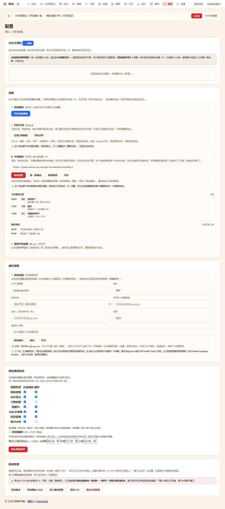
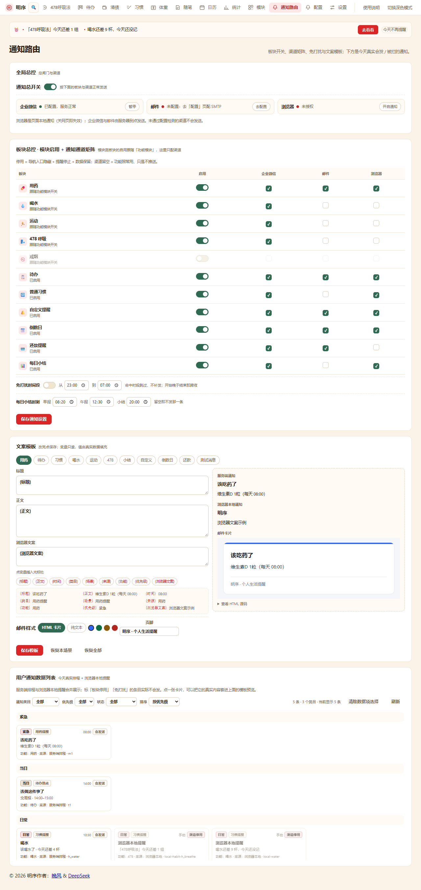
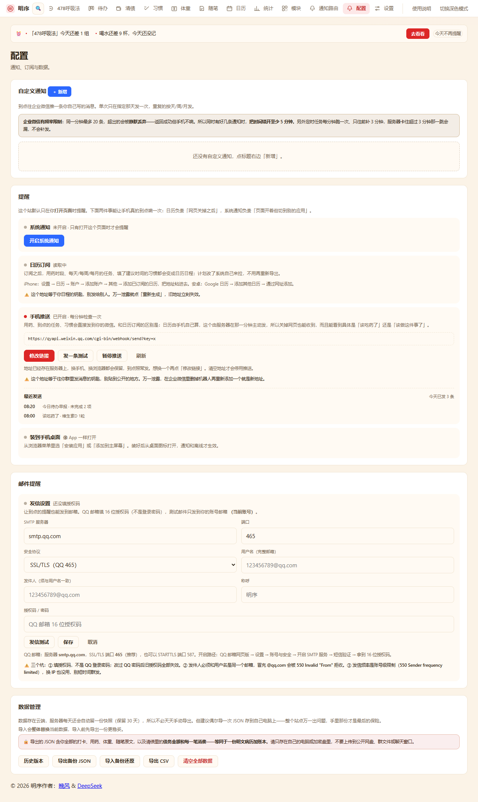

v210 → v215旧版把「通知通道矩阵」和「今日推送计划」放在配置页；新版收进独立的「通知路由」页，按板块统一管理，并补上全局总开关、邮件样式与真实通知列表。



| 方面 | 改前（v210） | 改后（v211） |
|---|---|---|
| 入口 | 全部塞在「配置」页底部，要往下滑很久 | NAV「设置」组新增「通知路由」，手机「更多」抽屉可达 |
| 矩阵 | 7 类提醒 × 2 渠道（企微 / 邮件），浏览器不参与 | 11 板块 × 3 渠道（+ 浏览器）；模块类板块的启用跟随「功能模块」 |
| 今日计划 | 只读列表，和真实发送口径有差距（只合并两个调度源） | 「用户通知数据列表」：五个调度源 + 本地提醒合并，标出会发送 / 板块停用 / 免打扰 / 本地 |
| 文案 | 写死在 schedule.php，用户改不了 | 11 个场景的标题 / 正文 / 浏览器文案可改，变量只读，右侧实时预览 |
| 免打扰 | 只有开关，时段写死 23:00–07:00 | 可配起止时间，支持跨夜；小结三个时刻同页可改 |
| 邮件 | 纯文本 | 纯文本 + HTML 卡片（multipart），配色与页脚可配 |
| 总开关 | 没有统一总闸，只能分别暂停企微 / 邮件 | 一键暂停全部通知，板块配置保持不变，重新打开立即恢复 |
| 浏览器渠道 | 矩阵里没有浏览器列，页面通知不受控 | 板块可单独关浏览器；关掉后本地通知不再弹 |
| 邮件样式 | 纯文本 | 纯文本 / HTML 卡片可切，主题色与页脚可配，可查看 HTML 源码 |
| 生效 | 矩阵只影响服务端推送；模块停用后仍可能收到 | 板块渠道真正参与发送判定；模块停用由排程层直接跳过 |